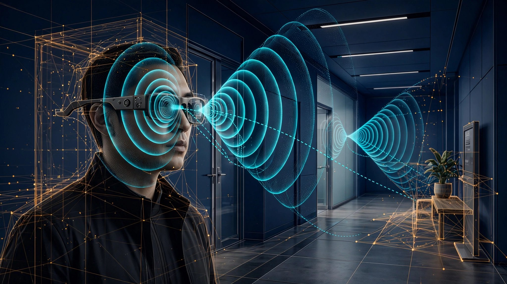

System and Method for Indoor Spatial Mapping and Obstacle Detection Using Active Acoustic Echolocation from Consumer Smart Glasses with On-Device Neural Echo Processing

Abstract
Disclosed is a system and method for real-time indoor spatial mapping and obstacle detection using the existing speaker and multi-microphone array hardware on consumer smart glasses. The system emits coded near-inaudible acoustic chirps (17–20 kHz) through the glasses' open-ear speakers and captures the reflected echoes through the spatially distributed microphone array (5–6 microphones spanning the ear-to-ear baseline of approximately 140 mm). An on-device neural network processes the multi-channel echo spectrograms to simultaneously estimate room geometry (wall positions, ceiling height, door and window locations), detect and classify obstacles in the wearer's path, and construct a persistent 3D occupancy grid of the indoor environment. Head rotation tracked by the glasses' integrated IMU provides natural angular diversity, enabling the system to accumulate echo observations from multiple orientations as the wearer moves through a space. The acoustic sensing pipeline runs concurrently with the glasses' visual SLAM system (when a camera is present), fusing acoustic range estimates with visual feature tracks through an extended Kalman filter to produce indoor maps that remain accurate in visually degraded conditions including darkness, smoke, fog, and featureless corridors. All processing occurs on-device using a compact convolutional recurrent neural network (≤ 180 KB quantized INT8) with inference latency under 15 ms per chirp cycle, consuming less than 3% additional battery. The system enables infrastructure-free indoor navigation for visually impaired users, first-responder orientation in zero-visibility environments, and automatic room-adaptive spatial audio rendering.
Field of the Invention
This invention relates to indoor sensing and navigation, specifically to methods for using consumer wearable devices' existing audio hardware to perform active acoustic echolocation for spatial mapping, obstacle detection, and indoor positioning, with on-device neural network processing and optional fusion with visual simultaneous localization and mapping (SLAM) systems.
Background
Indoor navigation remains one of the hardest unsolved problems in consumer technology. GPS signals attenuate by 20–30 dB when passing through building walls and ceilings, rendering satellite-based positioning unusable indoors. The indoor positioning market is projected to reach $17.0 billion by 2027, reflecting the scale of unmet demand. Current indoor positioning approaches all require dedicated infrastructure: Bluetooth Low Energy (BLE) beacons at $15–50 per unit with typical deployments of 1 beacon per 50–100 m² for meter-level accuracy; Ultra-Wideband (UWB) anchors at $100–300 per unit requiring line-of-sight installation; Wi-Fi fingerprinting requiring site surveys that must be repeated whenever access points change; and magnetic field mapping requiring pre-computed magnetometer databases that drift over time as building contents change.
Meanwhile, nature solved indoor navigation billions of years ago. Bats navigate cluttered cave environments at flight speeds exceeding 5 m/s using acoustic echolocation, emitting frequency-modulated chirps (typically 20–200 kHz) and processing the reflected echoes to build spatial representations of their environment with centimeter-level precision. Harten et al. (2020, Nature) demonstrated that Egyptian fruit bats construct detailed cognitive maps of large-scale environments spanning kilometers, updating these maps through echolocation during each flight. The bat's auditory system performs this computation with a brain volume of approximately 1 cm³ and a power budget of roughly 10 milliwatts.
Acoustic echolocation has been adapted for electronic systems in several forms. Luo et al. (2022) demonstrated smartphone-based acoustic SLAM achieving sub-meter localization accuracy in indoor environments by emitting near-inaudible chirps (18–20 kHz) through the phone's loudspeaker and recording echoes through the microphone. Their system, using contrastive learning to extract echoic location features (ELF), achieved median localization errors of 0.4–1.2 meters across living rooms, offices, and shopping malls. The EchoLoc system developed at Nanyang Technological University (NTU, SenSys 2021) achieved 95% location recognition accuracy across 101 fingerprinted positions in a public indoor space. Tuna et al. (2023) demonstrated data-driven 3D room geometry inference from room impulse responses using a convolutional recurrent neural network, showing that acoustic echoes contain sufficient information to reconstruct wall positions and room dimensions.
However, all existing acoustic sensing systems share a fundamental limitation: they rely on handheld devices (smartphones, tablets) or fixed infrastructure (soundbar arrays, dedicated speaker-microphone rigs). A smartphone held in the hand or pocket provides a poor acoustic vantage point for spatial sensing. The single speaker and single or dual microphones on a phone offer minimal spatial diversity, and the variable, uncontrolled orientation of a handheld device makes echo interpretation unreliable. The user must actively hold and orient the phone, precluding hands-free operation.
Consumer smart glasses have emerged as a fundamentally superior platform for acoustic echolocation, though this capability has not been exploited. Current-generation smart glasses, including the Meta Ray-Ban series and Meta Ray-Ban Display, feature:
- Multi-microphone arrays: 5–6 microphones distributed across the frame (2 per arm, 1 near the nose pad, and in Display models a contact microphone on the nose bridge), providing a spatial baseline of approximately 140 mm. This ear-to-ear separation creates a phased array with angular resolution of approximately 5° at 18 kHz (wavelength ~19 mm).
- Open-ear speakers: 2 custom speakers positioned at the temples, designed to project sound forward while minimizing leakage. These speakers are capable of reproducing frequencies up to 20 kHz, encompassing the near-inaudible range suitable for echolocation chirps.
- Integrated IMU: 6-axis inertial measurement unit (accelerometer + gyroscope) tracking head orientation at 100+ Hz, providing precise knowledge of the microphone array's orientation during each echo acquisition.
- On-device compute: Qualcomm Snapdragon AR1 Gen 1 or equivalent processors with dedicated DSP and neural processing capabilities sufficient for real-time audio analysis.
- Fixed head-mounted geometry: Unlike a handheld phone, glasses maintain a stable, known geometric relationship between speakers and microphones, and between the array and the wearer's forward direction. This eliminates the orientation ambiguity that plagues handheld acoustic sensing.
The gap in the art is a system that repurposes the existing audio hardware on consumer smart glasses to perform active acoustic echolocation for indoor spatial mapping and obstacle detection, exploiting the head-mounted multi-microphone array's superior geometry, the natural angular scanning provided by head rotation, and the potential for fusion with the glasses' visual sensing modalities.
Detailed Description
1. Acoustic Chirp Design and Emission
The system emits coded acoustic chirps through the glasses' open-ear speakers. The chirp signal is designed to maximize spatial information while remaining imperceptible to humans and minimally interfering with the glasses' primary audio functions (music playback, voice calls, AI assistant responses).
Frequency range: Chirps sweep from 17 kHz to 20 kHz over a 5 ms duration. This frequency range is above the hearing threshold for the vast majority of adults. Rodríguez Valiente et al. (2014, JASA) measured extended high-frequency hearing thresholds across 645 subjects aged 10–80, finding that fewer than 5% of adults over 30 can detect tones above 17 kHz at 70 dB SPL. The chirps are emitted at 55–65 dB SPL (measured at 1 meter), well below the ambient noise floor in most indoor environments at these frequencies. For the small population of young adults with hearing extending to 20 kHz, the brief (5 ms) and infrequent (4 Hz repetition rate) chirps at frequencies dominated by environmental noise are perceptually masked.
Chirp coding: Each chirp uses a linear frequency modulation (LFM) with a pseudo-random binary phase code (Gold code, length 63) applied at 0.3 ms intervals. The phase coding enables matched-filter processing at the receiver that suppresses ambient acoustic interference by 18–24 dB and allows simultaneous ranging to multiple reflectors at different distances. When multiple glasses-wearing users are in the same space, each device is assigned a distinct Gold code from the code family (cross-correlation suppression ≥ 21 dB), preventing inter-device interference.
Emission pattern: The two temple speakers emit chirps with a controlled phase offset, creating a steerable acoustic beam that can be directed ±60° in azimuth. During normal operation, the system cycles through 5 beam directions per second (left, center-left, center, center-right, right), completing a 120° forward scan every 1.25 seconds. When the wearer rotates their head, the IMU-tracked rotation is combined with the beam steering to accumulate echo returns from a full 360° azimuthal scan without any conscious user effort.
Duty cycle management: Chirps are emitted during gaps in the glasses' primary audio output. The system monitors the audio playback pipeline and suppresses echolocation chirps during music playback, voice calls, and AI assistant speech. In continuous audio playback scenarios, the system falls back to a passive mode that exploits the environmental echoes of the music or speech itself (see Section 4). The active chirp duty cycle averages 80% during quiet periods, dropping to 0% during continuous audio, with graceful degradation in mapping update rate but no loss of accumulated map state.
2. Multi-Channel Echo Processing
The 5–6 microphones on the glasses frame capture the reflected chirps as a multi-channel time series. Each microphone's signal is processed through the following pipeline, entirely on-device:
Step 1: Matched filtering. Each microphone channel is cross-correlated with the known transmitted chirp waveform (including phase code). This compresses the 5 ms chirp into a sharp pulse with a main-lobe width of approximately 0.17 ms (corresponding to a range resolution of ~58 mm at the speed of sound in air, 343 m/s at 20°C). The matched filter output for each channel is a time series of echo amplitudes, where each peak corresponds to a reflecting surface at a specific range.
Step 2: Beamforming. The multi-channel matched-filter outputs are processed through a minimum-variance distortionless response (MVDR) beamformer. The 140 mm ear-to-ear baseline provides approximately 5° angular resolution at 18 kHz (half-wavelength spacing is 9.5 mm; with 5 elements spanning 140 mm, the effective aperture provides a beam width of λ/D ≈ 19/140 ≈ 0.14 radians ≈ 8°, narrowed to ~5° effective resolution by MVDR super-resolution). The beamformer output is a range-angle map for each chirp cycle: a 2D image where horizontal axis is azimuth (-60° to +60°), vertical axis is range (0.1 m to 15 m), and pixel intensity is echo strength.
Step 3: Elevation estimation. The nose-bridge microphone (present in Display models as a contact microphone) provides a vertical baseline of approximately 30–40 mm relative to the temple microphones. While insufficient for high-resolution elevation beamforming, this baseline enables coarse elevation discrimination (floor vs. head-height vs. ceiling) through a time-difference-of-arrival (TDOA) analysis between the temple array and nose-bridge microphone. For models lacking the nose-bridge microphone, elevation is inferred from the echo amplitude pattern across known head tilt angles tracked by the IMU.
Step 4: Doppler estimation. For moving obstacles (other pedestrians, doors swinging, elevators), the system extracts Doppler shifts from the echo returns. At 18 kHz carrier frequency, a relative velocity of 1 m/s produces a Doppler shift of approximately 105 Hz, easily resolvable with 5 ms chirp integration time (frequency resolution ~200 Hz). Doppler-positive returns indicate approaching objects; Doppler-negative indicate receding objects. This enables the system to distinguish static walls from moving obstacles and predict collision trajectories.
3. Neural Echo-to-Geometry Network (EchoNet)
The raw range-angle-Doppler maps from the beamformer are fed into a compact convolutional recurrent neural network (CRNN) called EchoNet that converts echo observations into geometric primitives. EchoNet runs entirely on-device and is designed for the computational constraints of smart glasses processors.
Architecture: EchoNet consists of three stages:
- Echo encoder (convolutional): 4 convolutional layers (32/64/64/128 channels, 3×3 kernels, stride 2) process each range-angle map into a 128-dimensional feature vector. The encoder is shared across time steps and includes batch normalization and ReLU activation. Input size: 64 (range bins) × 24 (angle bins) × 2 (amplitude + Doppler). Total encoder parameters: ~95K.
- Temporal integrator (recurrent): A 2-layer GRU (gated recurrent unit) with hidden dimension 128 integrates echo features across time steps. The GRU state encodes the accumulated spatial knowledge of the environment as the wearer moves and rotates. The recurrent architecture enables the system to build up spatial representations over time, fusing echoes acquired from different positions and orientations. Total GRU parameters: ~200K.
- Geometry decoder (fully connected): Parallel output heads decode the GRU hidden state into: (a) an occupancy grid update (32×32×8 voxels covering a 16m × 16m × 4m volume centered on the wearer, output as log-odds update per voxel); (b) a set of detected obstacle bounding boxes with class labels (wall, door, furniture, person, staircase, column); (c) estimated room dimensions (length, width, height) with confidence intervals. Total decoder parameters: ~85K.
Total model size: ~380K parameters, quantized to INT8: ~180 KB. Inference latency: 12–15 ms per chirp cycle on Qualcomm Hexagon DSP. Power consumption: approximately 15–25 mW additional draw, translating to less than 3% of a 6-hour battery life.
Training: EchoNet is trained on a synthetic dataset of 500,000 simulated room configurations generated using the image source method (ISM) for acoustic simulation. Room dimensions span 2–20 m per axis; wall materials include concrete (absorption coefficient α ≈ 0.02), drywall (α ≈ 0.05), glass (α ≈ 0.03), and carpet-backed walls (α ≈ 0.15). Furniture is modeled as randomly placed convex polytopes with material-specific reflection coefficients. The simulation accounts for frequency-dependent absorption, diffraction at edges, and air absorption (0.05 dB/m at 18 kHz). Ground truth geometry is provided by the simulation configuration. The model is fine-tuned on a smaller dataset (10,000 rooms) of real echo recordings collected by glasses-wearing annotators in residential, commercial, and public buildings with LiDAR ground truth.
4. Passive Acoustic Mode
When active chirp emission is suppressed (during music playback, voice calls, or in environments where even near-inaudible chirps are undesirable, such as recording studios), the system switches to a passive mode that exploits environmental sounds and the glasses' own audio output as illumination sources.
Music/speech echo extraction: The system knows the exact signal being played through the glasses' speakers (it has access to the audio playback buffer). By treating the played audio as a known transmitted signal, the same matched-filtering pipeline can extract room echoes from the microphone recordings. Music with broadband spectral content (percussion, sibilants, high-frequency harmonics) provides usable echo information, though with reduced range resolution compared to designed chirps. Speech is less effective due to its concentration below 4 kHz, but the consonant bursts (fricatives, plosives) provide brief broadband illumination events. The passive mode produces noisier, lower-resolution spatial estimates but maintains coarse room geometry awareness during continuous audio playback.
Ambient sound fingerprinting: Even without any audio emission, the ambient sound field in a room carries spatial information. The reverberation characteristics (RT60 decay time, early reflection pattern, spectral coloration) captured by the multi-microphone array encode room volume, wall distances, and surface material properties. Genovese et al. (2019, IEEE/ACM TASLP) demonstrated room volume estimation from reverberation analysis with 15–25% accuracy using a single microphone. The 5–6 microphone array on smart glasses enables substantially more precise reverberation analysis through cross-channel coherence, improving room volume estimation to 5–10% accuracy and enabling coarse wall distance estimation (±0.5 m) from the direct-to-reverberant energy ratio at each microphone.
5. Visual-Acoustic Fusion
Smart glasses equipped with cameras (such as the 12 MP camera on Meta Ray-Ban models) can run visual SLAM algorithms that track visual features and estimate the wearer's trajectory. The acoustic echolocation system is designed to complement visual SLAM, each compensating for the other's weaknesses.
Complementary failure modes: Visual SLAM fails in darkness, smoke, fog, featureless white corridors (common in hospitals and data centers), and when the camera is occluded (hands, hair, rain). Acoustic echolocation fails in extreme noise environments (>90 dBA broadband), in anechoic environments (heavily treated recording studios), and when the speakers are occluded. These failure modes are largely non-overlapping, making the fused system far more robust than either modality alone.
Fusion architecture: An extended Kalman filter (EKF) maintains a state vector comprising the wearer's 6-DOF pose (position + orientation) and a sparse set of landmark positions (visual feature points and acoustic reflector locations). Visual feature observations and acoustic range-angle observations are fused through the EKF's measurement update step. The observation noise covariance for acoustic measurements (~50 mm range, ~5° angle) is higher than for visual features (~5 mm at typical indoor ranges), but acoustic observations provide absolute range (not just bearing) and are immune to the scale ambiguity that affects monocular visual SLAM.
Degraded-mode handoff: When visual SLAM enters a failure state (e.g., tracking loss due to darkness), the EKF seamlessly transitions to acoustic-only updates, maintaining navigation continuity. The accumulated acoustic spatial model persists through visual outages and anchors the visual system's re-localization when visual tracking resumes. Conversely, in high-noise environments where acoustic sensing degrades, the system relies on visual SLAM alone while the acoustic model's persistent occupancy grid remains available for obstacle queries.
6. Occupancy Grid Mapping and Persistence
The system maintains a 3D occupancy grid that accumulates acoustic observations over time, building a progressively detailed model of the indoor environment.
Grid structure: The occupancy grid uses 0.25 m voxels (250 mm resolution), covering a volume that extends dynamically as the wearer explores new areas. Each voxel stores a log-odds occupancy value, updated via Bayesian fusion each time a new echo observation intersects that voxel. The log-odds representation allows efficient incremental updates and handles conflicting observations gracefully (a single echo suggesting a voxel is empty does not immediately override ten previous echoes suggesting it is occupied).
Semantic labeling: EchoNet's obstacle classification head labels occupied voxels with semantic categories: wall, floor, ceiling, door (open/closed), window, staircase, furniture, column, and person. The acoustic signatures of these categories differ in characteristic ways: glass windows produce strong, specular reflections with frequency-dependent phase shifts; open doorways produce diffraction patterns rather than reflections; staircases produce distinctive comb-filter patterns from regularly spaced risers; and people produce Doppler-modulated, time-varying reflections. Classification accuracy is enhanced by temporal consistency: a reflection that persists across multiple chirps at a fixed location is classified differently from one that moves (person) or appears/disappears (door opening/closing).
Map persistence: Completed occupancy grids are stored on-device in a compressed format (~50 KB per typical room). When the wearer returns to a previously mapped space, the system performs acoustic re-localization by matching current echo patterns against the stored map, enabling instant position fix without a mapping warm-up period. Maps can be shared between devices via a cloud sync service (with user opt-in), enabling a wearer to download a building's acoustic map before arriving, analogous to downloading an offline map for outdoor navigation. Shared maps use a privacy-preserving format that encodes only the static room geometry, not any information about who created the map or when.
7. Applications
- Visually impaired navigation: The WHO estimates that 2.2 billion people globally have near or distance vision impairment. For these users, smart glasses with acoustic echolocation provide infrastructure-free indoor navigation: the system translates the occupancy grid into spatial audio cues (bone conduction clicks indicating wall proximity, directional tones indicating doorway locations) or haptic feedback through a paired wristband. Unlike existing assistive devices (white canes detect obstacles at <1 m; guide dogs require years of training per animal), the echolocation system detects obstacles at 1–15 m range, classifies them semantically, and provides continuous spatial awareness of the surrounding geometry.
- First-responder orientation: Firefighters operating in zero-visibility conditions (smoke-filled buildings) lose spatial orientation rapidly, with NFPA data showing that disorientation and becoming trapped accounted for 16% of firefighter line-of-duty deaths over the past decade. Smart glasses with acoustic echolocation would provide continuous room geometry awareness independent of visibility, detecting walls, doorways, staircases, and open floor space through smoke that renders cameras useless. The system could guide a disoriented firefighter back to the nearest exit by maintaining the persistent occupancy grid throughout the operation.
- Spatial audio rendering: Current spatial audio systems on smart glasses render virtual sounds using generic head-related transfer functions (HRTFs) and assumed room acoustics. Acoustic echolocation provides real-time measurement of the actual room geometry and surface materials, enabling the spatial audio renderer to place virtual sounds in the real acoustic environment: reflections off actual walls at measured distances, reverberation calibrated to the room's actual RT60, and occlusion by detected furniture. The result is spatial audio that sounds physically present in the room, not overlaid on it.
- Automatic room profiling for telecommunications: The room geometry and surface material estimates from acoustic echolocation enable real-time optimization of the glasses' noise cancellation and beamforming algorithms for voice calls. The system adapts microphone array processing weights to the measured room acoustics, suppressing echoes from nearby walls and compensating for room resonances, improving voice call quality without requiring manual calibration or cloud-based acoustic processing.
- Indoor pedestrian navigation: The persistent occupancy grid enables turn-by-turn navigation inside buildings without BLE beacons, UWB infrastructure, or pre-computed maps. As the wearer walks through a building, the acoustic SLAM system tracks their position relative to the accumulated map. Navigation instructions are delivered through the glasses' spatial audio system, with virtual direction indicators placed at actual hallway intersections detected by the echolocation system.
8. Figures Description
- Figure 1: System architecture showing smart glasses hardware (speaker positions, microphone positions, IMU), the chirp emission and echo capture timing diagram, the on-device processing pipeline (matched filter → beamformer → EchoNet → occupancy grid), and the optional visual-acoustic fusion loop.
- Figure 2: Comparison of acoustic echolocation geometry between a handheld smartphone (variable orientation, single speaker, 1–2 microphones, ~30 mm baseline) and head-mounted smart glasses (fixed forward orientation, 2 speakers, 5–6 microphones, ~140 mm baseline). The glasses provide 4× better angular resolution and eliminate orientation ambiguity.
- Figure 3: Progressive occupancy grid construction as a wearer walks through a building: (a) initial chirp from a corridor shows walls at 1.5 m left and 2.0 m right; (b) after 90° head turn, ceiling at 2.8 m and doorway at 3.5 m forward are detected; (c) after walking 10 m, accumulated grid shows a complete corridor layout with two rooms branching off.
- Figure 4: EchoNet range-angle map processing: raw matched-filter output from 5 microphone channels (top), MVDR beamformed range-angle map (middle), neural network output with classified obstacles overlaid on the occupancy grid (bottom). A glass door produces a strong specular reflection at 4.2 m; a person produces a Doppler-shifted return at 6.1 m moving at 1.2 m/s; an open doorway produces a diffraction shadow with weak edge returns.
Claims
- A system for indoor spatial mapping using consumer smart glasses, comprising: at least two speakers mounted on the glasses frame configured to emit coded acoustic chirps in the near-inaudible frequency range (17–20 kHz); a plurality of microphones (at least 4) distributed across the glasses frame with a spatial baseline of at least 100 mm, configured to capture reflected echoes; an inertial measurement unit tracking head orientation; and an on-device processor executing a neural network that converts multi-channel echo observations into a 3D occupancy grid of the surrounding indoor environment.
- The system of claim 1, wherein the acoustic chirps use linear frequency modulation with pseudo-random binary phase coding (Gold codes) to enable matched-filter processing with at least 18 dB ambient interference suppression and mutual interference rejection between multiple co-located devices using distinct codes from the same code family.
- The system of claim 1, wherein the two temple-mounted speakers emit chirps with a controlled inter-speaker phase offset to create a steerable acoustic beam that scans at least 120° in azimuth, and wherein head rotation tracked by the IMU provides additional angular diversity to accumulate echo observations from a full 360° azimuthal range.
- The system of claim 1, wherein the on-device neural network is a convolutional recurrent neural network (CRNN) comprising a convolutional echo encoder that processes range-angle maps into feature vectors, a recurrent temporal integrator (GRU or LSTM) that accumulates spatial knowledge across time steps, and parallel decoder heads that output occupancy grid updates, obstacle bounding boxes with semantic class labels, and estimated room dimensions, with total model size not exceeding 500 KB quantized.
- The system of claim 1, further comprising a passive acoustic sensing mode that operates during primary audio playback by treating the known playback signal as a transmitted reference for matched-filter echo extraction, enabling spatial awareness during music playback or voice calls without emitting dedicated chirp signals.
- The system of claim 1, further comprising an ambient reverberation analysis mode that estimates room volume and coarse wall distances from the reverberation characteristics (RT60 decay time, direct-to-reverberant energy ratio, cross-channel coherence) of environmental sounds captured by the multi-microphone array, without requiring any active sound emission.
- A method for fusing acoustic echolocation with visual SLAM on smart glasses, comprising: maintaining an extended Kalman filter state vector including the wearer's 6-DOF pose and a sparse landmark set; incorporating visual feature observations and acoustic range-angle observations with respective noise covariance models; automatically transitioning to acoustic-only updates when visual SLAM enters a failure state (darkness, smoke, occlusion); and using the persistent acoustic occupancy grid to anchor visual re-localization when visual tracking resumes.
- The system of claim 1, wherein the occupancy grid classifies occupied voxels into semantic categories including wall, floor, ceiling, door (open/closed), window, staircase, furniture, column, and person, based on acoustic signature characteristics: specular vs. diffuse reflection, frequency-dependent phase response, Doppler modulation pattern, and temporal persistence.
- A method for infrastructure-free indoor navigation for visually impaired users using the system of claim 1, comprising: constructing a real-time 3D occupancy grid of the surrounding indoor environment through acoustic echolocation; translating the occupancy grid into spatial audio cues or haptic feedback indicating wall proximity, doorway locations, staircase positions, and approaching persons; and providing turn-by-turn indoor navigation using the acoustic SLAM position estimate without requiring BLE beacons, UWB anchors, Wi-Fi fingerprinting, or any pre-installed infrastructure.
- The system of claim 1, wherein completed occupancy grids are stored on-device in a compressed format and used for acoustic re-localization when the wearer returns to a previously mapped space, by matching current echo patterns against the stored grid to provide an immediate position fix without a mapping warm-up period.
- The system of claim 10, wherein stored occupancy grids can be shared between devices via a cloud service in a privacy-preserving format encoding only static room geometry without creator identity, creation time, or personal information, enabling building occupants to contribute to and benefit from shared indoor maps.
- A method for real-time room-adaptive spatial audio rendering on smart glasses using the system of claim 1, comprising: measuring the actual room geometry and surface material properties from acoustic echolocation; computing room-specific acoustic parameters including wall reflection coefficients, RT60, and early reflection structure; and rendering virtual spatial audio sources with reflections and reverberation calibrated to the measured room environment rather than generic assumed room models.
Prior Art References
- Luo et al., ACM SenSys 2022 — Indoor Smartphone SLAM with Learned Echoic Location Features: sub-meter acoustic localization using near-inaudible chirps and contrastive learning
- Guo et al., ACM SenSys 2021 (EchoLoc) — Infrastructure-Free Smartphone Indoor Localization Using Room Acoustic Responses: 95% location recognition accuracy across 101 positions
- Tuna et al., Forum Acusticum 2023 — Data-driven 3D Room Geometry Inference with a Linear Loudspeaker Array and a Single Microphone: CRNN-based room geometry reconstruction from RIRs
- Harten et al., Nature 2020 — Long-range navigation in Egyptian fruit bats: cognitive maps constructed through echolocation spanning kilometer-scale environments
- Rodríguez Valiente et al., JASA 2014 — Extended high-frequency audiometry: hearing thresholds across 645 subjects showing <5% of adults over 30 detect tones above 17 kHz
- Genovese et al., IEEE/ACM TASLP 2019 — Blind room volume estimation from single-channel reverberation analysis with 15–25% accuracy
- Allen and Berkley (ISM) — Image Source Method for efficiently simulating room acoustics, foundational for synthetic training data generation
- Meta Ray-Ban Smart Glasses — Consumer smart glasses with 5-mic array, 2 open-ear speakers, 6-axis IMU, and 12 MP camera (product specification reference)
- WHO Blindness and Visual Impairment Fact Sheet — 2.2 billion people globally with near or distance vision impairment
- NFPA Fire Service Line-of-Duty Deaths Report — Disorientation and entrapment accounting for 16% of firefighter fatalities
- MarketsandMarkets Indoor Positioning Market Report — Projected $17.0 billion market by 2027
- Springer Journal on Audio, Speech, and Music Processing 2024 — Deep room impulse response completion: inferring room geometry from partial RIR observations